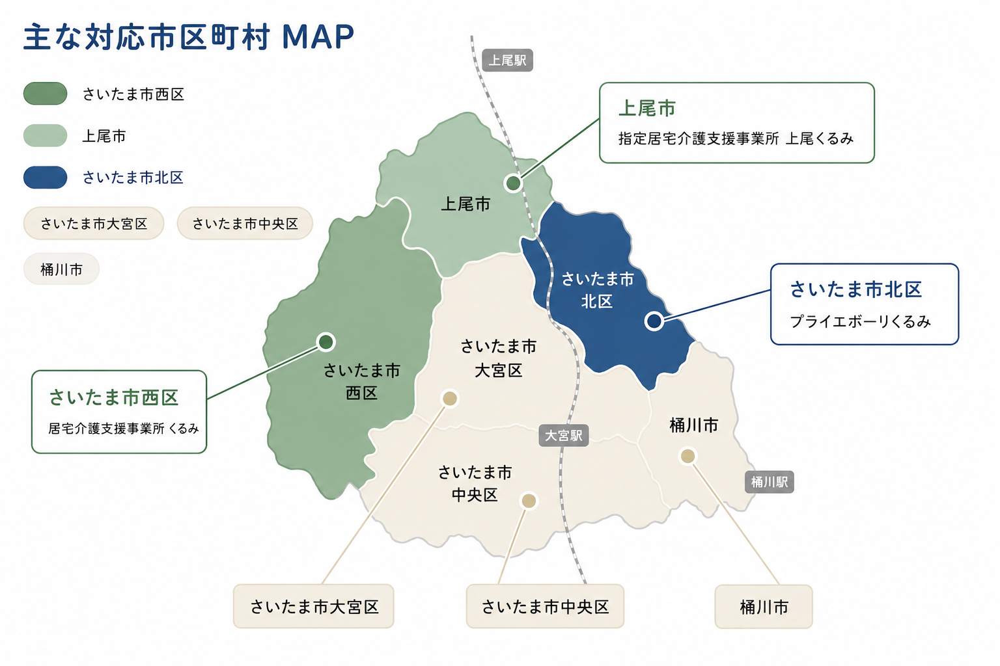

居宅介護支援事業所くるみ
医療法人 博滇会グループ
さいたま市・上尾市で、ケアマネジャーがご本人とご家族の暮らしに寄りそいます。
どこに相談したらよいか分からない、そんなときも、まずはお気軽にお声がけください。
介護保険から全額給付されるため、ご利用者様のご負担はありません。
はじめて介護保険を使う方にも、わかりやすくご案内します。
ケアマネジャーが、ご本人・ご家族のご希望をうかがって、
介護保険のサービス利用を一緒に考えるところです。
要介護認定を受けたばかりの方、ご自宅での介護を続けたい方、ご家族の負担を減らしたい方など、 どんな段階の方でもお気軽にご相談いただけます。
介護のはじまりから、暮らしの伴走まで。4つのサポートでお応えします。
要介護認定の申請手続きや、必要書類のご案内をお手伝いします。役所に行くのが難しい方には、代行も承ります。
ご本人・ご家族のご希望をうかがいながら、暮らしに合ったサービスの組み合わせをご提案します。
訪問介護・デイサービス・福祉用具など、必要なサービスとの調整をすべてケアマネジャーが行います。
毎月ご自宅にうかがい、お困りごとを確認します。状況に応じてケアプランを見直します。
お問い合わせから、サービス開始までの5ステップ。
お電話またはお問い合わせフォームよりご連絡ください。
ケアマネジャーがご自宅にうかがい、お困りごとやご希望をお聞きします。
ご本人・ご家族のご希望に合わせたサービスの組み合わせをご提案します。
ご納得いただいた内容で、必要な事業者との契約・調整をすすめます。
サービス開始後も毎月のモニタリングで、状況を確認しながら見直します。
3事業所が連携して、さいたま市西区・上尾市を中心に対応しています。

※ 上記マップに記載の市区町村が、3事業所での主な対応エリアです。
※ 近隣の市区町村も、地域包括支援センターと連携してご案内いたします。
※ 訪問可能な範囲は事業所により異なります。詳しくはお問い合わせください。
3つの事業所が連携してサポートします。お近くの事業所へお気軽にご連絡ください。
はじめての方からよくいただくご質問にお答えします。
お電話・お問い合わせフォームの2つの方法でお気軽にどうぞ。
お近くの事業所へ直接おかけください。